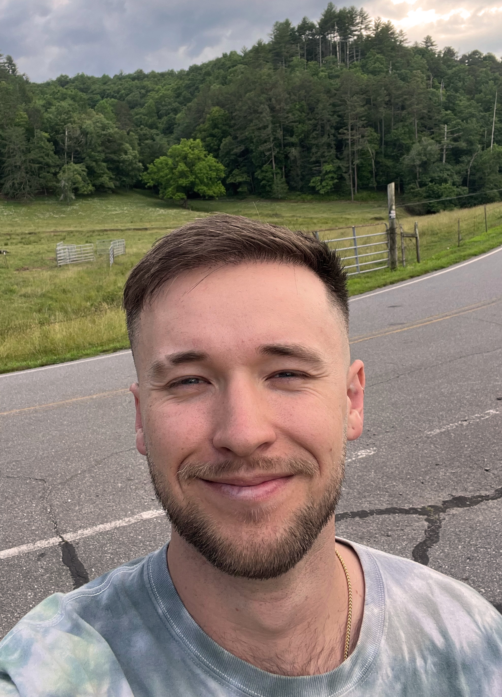

Most people call me Newt. It's nice to meet you.
I am currently pursuing a Master's degree in Clinical Mental Health Counseling at New Orleans Baptist Theological Seminary and, in my internship with Leeke Magee Christian Counseling Center, have provided trauma-informed counseling in a community mental health setting.
My professional and volunteer experiences have taken me beyond the counseling office. I have spent time living and working alongside refugee communities in Malaysia and Iraq, learning firsthand the importance of cultural humility, trust-building, and understanding the impact of displacement, trauma, and resilience. These experiences continue to shape the way I approach counseling with individuals from diverse cultural, religious, and linguistic backgrounds.
I am trained in Cognitive Behavioral Therapy (CBT), Acceptance and Commitment Therapy (ACT), Eye Movement Desensitization and Reprocessing (EMDR), and EMDR 2.0, and am in the process of completing Gottman Method Couples Therapy Training (Levels 1 & 2), and the Foundations of Story-Informed Trauma Therapy.
M.A., Clinical Mental Health Counseling
New Orleans Baptist Theological Seminary, New Orleans, LA
Expected December 2027
B.S., Environmental Science: Quantitative Energy Systems
University of North Carolina, Chapel Hill, NC
2021
English: Native
Arabic: Intermediate in Syrian Dialect, Elementary in Modern Standard (MSA)
German: High Elementary
French: High Elementary
Mandarin Chinese: Low Elementary
Dr. Kelle Falterman | January 2026 – May 2026
Individual Supervisor, Leeke Magee Christian Counseling Center, New Orleans, LA
kfalterman@nobts.edu
Dr. Craig Garrett | August 2024 – Present
Professor; Divisional Associate Dean of Counseling, New Orleans Baptist Theological Seminary, New Orleans, LA
+1 (504) 816-8089
cgarrett@nobts.edu
Rachel H. | August 2018 – Present
Personal Reference, Kuala Lumpur, Malaysia
+60 (0) 11 1853 1445
rphotong@gmail.com